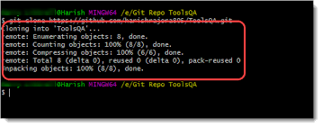

Step 1: I began by looking up Github personal website templates. Eventually, I stumbled upon this repository created by Tobias Wilhelm that could be cloned for free and customized. I decided to go with this option as I am already familiar with HTML, CSS, and Javascript. Another option would be to use a Jekyll theme.
Step 2: After finding a suitable template on Github, I used the template to create a new repository. I did this by clicking the dropdown on the green 'Use this template button' in the top right. I then clicked on create a new repository. Because I am creating a personal website, I named the repository 'EmilyGorial1', as this is my username. I then cloned the repository that I just created to be able to customize it myself. To clone the repository, you click on the dropdown on the green 'code' button. From there, ensure that you are on the 'local' tab. Under the local tab, you will click 'SSH'. You will then copy the URL. Next, you will open VS code, or any IDE that you are comfortable using. Open the terminal in your IDE and type 'git clone' (without the quotes), followed by the URL you just copied, and hit enter. If the repository was successfully cloned, your terminal should look something like this
Step 3: Once you have successfully cloned the repository, you can begin adjusting the website to your liking. You will likely need some knowledge in CSS, HTML, and Javascript. CSS is used for the styling aspect of the website, for things such as the fonts, colors, and spacing. HTML is used for the basic structure and layout of the webpage. Finally, Javascript is used to handle user interaction and engagement. It's really helpful to be able to view the changes you are making as you work, which can be done with the help of LiveServer. LiveServer is an extension in VS Code that allows you to launch a local server, which is basically just a preview of how your website looks.
Step 4: Once you are satisfied with your changes, you will go back to the terminal. If you added any files while you were making changes, you will type 'git add .' (without the quotations) in the terminal and press Enter. This will prepare all of the new files you added to be added to your Github repository. Next, you will type 'git commit -m' and press Enter. This command will prepare all of your changes to be added to your repository. The -m flag allows you to add a commit message, which you should be able to type directly in the terminal and press Enter. The commit message should summarize the changes you made in one line. Once you have done that, you can type 'git push', into the terminal. This will take all of your files and changes and push them into your repository.